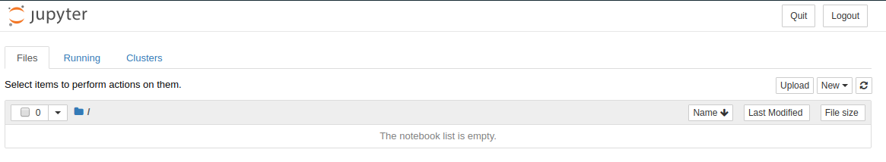
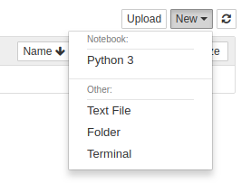
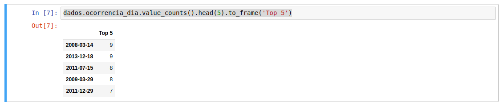
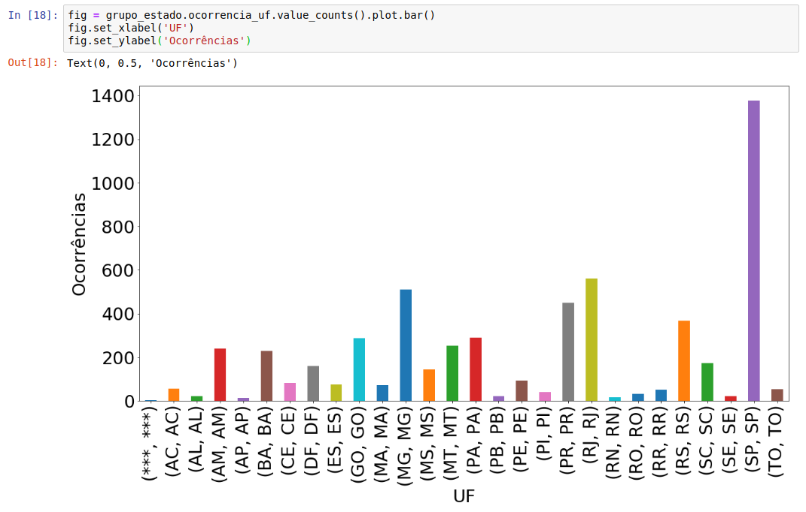
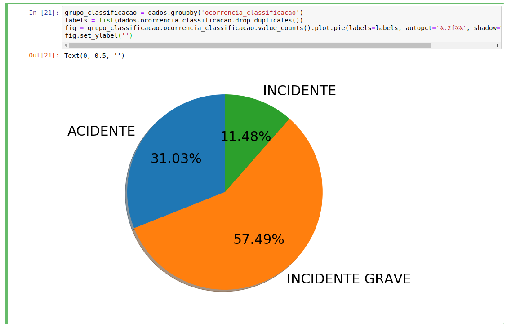

Análise de dados com Python, Pandas e Matplotlib no Jupyter Notebook
Antes de começarmos,
- Instale o pyenv, ele facilita o gerenciamento de versões do Python sem muita dor de cabeça;
- Use a virtualenv, ela isola as instalações das dependências Python para que você não precise instalar direto no teu sistema operacional (gerando mais dor de cabeça ainda). Ela vem por default nas versões mais atuais do Python, bastando digitar o comando para criar uma virtualenv:
python -m venv .nome_tua_venv; - Baixe o dataset que analisaremos, ele mostra ocorrências aeronáuticas na aviação civil brasileira; no site ele é chamado de Tabelas de Ocorrências: http://dados.gov.br/dataset/ocorrencias-aeronauticas-da-aviacao-civil-brasileira;
- Com a virtualenv ativada, instale as dependências necessárias com o comando:
pip install jupyter pandas matplotlib
Rodando o Jupyter
Para rodar o Jupyter Notebook basta executar o comando: jupyter notebook
Ele deve te redirecionar para uma tela parecida com a abaixo:

Criando um novo notebook
Para criar um novo notebook basta clicar em New -> Python 3, como na imagem abaixo:

Importando as dependências
Agora com nosso notebook aberto importaremos as dependências (pandas e matbplotlib):
%matplotlib inline
import matplotlib.pyplot as plt
import pandas as pd
A linha %matplotlib inline diz ao Jupyter que queremos mostrar os gráficos da Matplotlib no próprio notebook.
Importando o dataset
Mova o arquivo CSV para a pasta que você está rodando o Jupyter e em seu notebook importe o dataset com o pandas da seguinte maneira:
dados = pd.read_csv('ocorrencias_aeronauticas.csv', sep='~')
Note que estamos enviando sep='~' como parâmetro, isso quer dizer que o separador que nosso arquivo CSV está utilizando é o til.
Se você digitar dados no notebook e apertar SHIFT+ENTER verá um preview dos teus dados em forma de tabela. Eles foram transformados em um tipo de dado chamado DataFrame que é basicamente a representação dos teus dados em forma de uma tabela, similar à maneira como os dados são salvos e visualizados em um banco de dados relacional.
Informações gerais sobre o dataset
O código abaixo retorna informações gerais sobre teu dataset:
dados.info()

Explore um pouco funções e atributos como dados.dtypes, dados.head(3) e dados.tail(3).
Top 5 datas com o maior número de ocorrências
Para retornar as cinco datas com maior número de ocorrências rode o código abaixo:
dados.ocorrencia_dia.value_counts().head(5).to_frame('Top 5')
Como vimos nas informações gerais do dataset, uma das colunas da tabela chama-se ocorrencia_dia. O pandas converte cada coluna em um tipo de dado chamado Series. Este tipo de dado tem uma função chamada value_counts() que retorna a soma dos valores únicos contidos para a coluna em questão e ordena esses dados de forma descendente (do maior para o menor).
O método head(5), como já vimos, retorna os primeiros N resultados, no nosso caso, os primeiros cinco.
O método to_frame transforma nossa Series em um Dataframe para que o resultado possa ser exibido em forma de tabela.
O resultado deve ser parecido com o abaixo:

Ocorrências de acidentes na cidade de São Paulo
Para gerar uma tabela com as ocorrências de acidentes que ocorreram na cidade de São Paulo, precisaremos fazer uma query no nosso dataset. Conceitualmente, a query é bem semelhante ao que temos no SQL, mas a sintaxe é completamente diferente:
query = (dados.ocorrencia_cidade == 'SÃO PAULO') & (dados.ocorrencia_classificacao == 'ACIDENTE')
dados_acidentes = dados[query]
dados_acidentes
Estamos montando a query na primeira linha, onde mostramos que queremos retornar dados onde ocorrencia_cidade seja igual a SÃO PAULO e ocorrencia_classificacao igual a ACIDENTE.
Na segunda linha passamos a query para nosso Dataframe como se estivéssemos tentando buscar um valor passando uma chave em um dicionário, isso acontece já que por trás dos panos o Dataframe utiliza o método Dataframe.__getitem__() para retornar um novo Dataframe, mas com os resultados que satisfizeram a query informada. Quem já conhece como funciona um dicionário no Python sabe que que por trás de meu_dicio['minha_chave'] existe um método meu_dicio.__getitem__() que faz a mágica que retorna o valor correspondente à chave informada.
A terceira linha apenas mostra os resultados.
Gráfico de ocorrências por estado
Primeiramente, vamos configurar o tamanho da imagem que queremos gerar para o gráfico, bem como o tamanho da fonte. Note que agora estamos utilizando a Matplotlib:
plt.rc('figure', figsize=(20, 10))
plt.rcParams.update({'font.size': 30})
Para gerar o gráfico, basta executar o código abaixo:
fig = grupo_estado.ocorrencia_uf.value_counts().plot.bar()
fig.set_xlabel('UF')
fig.set_ylabel('Ocorrências')
Estamos gerando um gráfico de barras com a contagem única de ocorrências por UF e adicionando labels aos eixos X e Y.
O resultado deve ficar semelhante a este:

Note que São Paulo é o estado com mais ocorrências.
Gráfico de classificação de ocorrências
Neste caso, geraremos um gráfico de pizza que mostra a porcentagem para cada tipo de ocorrência. Segue o código:
grupo_classificacao = dados.groupby('ocorrencia_classificacao')
labels = list(dados.ocorrencia_classificacao.drop_duplicates())
fig = grupo_classificacao.ocorrencia_classificacao.value_counts().plot.pie(labels=labels, autopct='%.2f%%', shadow=True, startangle=90)
fig.set_ylabel('')
Na primeira linha estamos agrupando os resultados por classificação (a ideia é bem semelhante ao GROUP BY que temos no SQL). O método groupby retorna os dados agrupados contidos em um tipo de dado chamado GroupBy.
Na segunda linha estamos criando os labels para o gráfico, para que a visualização seja mais precisa e agradável.
Na terceira linha estamos gerando o gráfico de pizza com a contagem de ocorrências por tipo de ocorrência. Além disso, estamos configurando a exibição do gráfico informando que queremos que seja exibida também a porcentagem (autopct='%.2f%%'), uma sombra (shadow=True) e uma leve inclinação (startangle=90) para que o gráfico fique mais bonito, além claro de informarmos quais serão os labels que queremos mostrar.
Na quarta linha estamos removendo o label para o eixo Y, já que nesse caso ele não é necessário.
O resultado deve ficar semelhante ao abaixo:

Note que INCIDENTE GRAVE é o tipo mais comum de ocorrência.
Para salvar a imagem, basta executar o código abaixo:
plt.savefig('classificacao_ocorrencias.png', bbox_inches='tight')
Concluindo
Neste tutorial é possível entender o básico de pandas e matplotlib, para mais informações leia a documentação dos mesmos :)
Segue o notebook completo com todos os exemplos deste tuturial: https://github.com/marquesds/analise_ocorrencias_aviacao_brasileira
Valeu ;)
Subscribe to Lucas Marques
Get the latest posts delivered right to your inbox